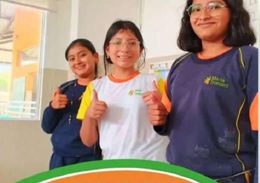
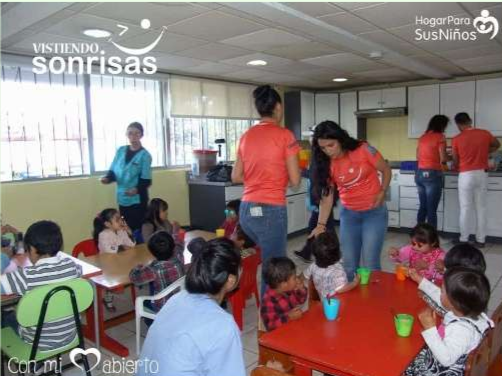
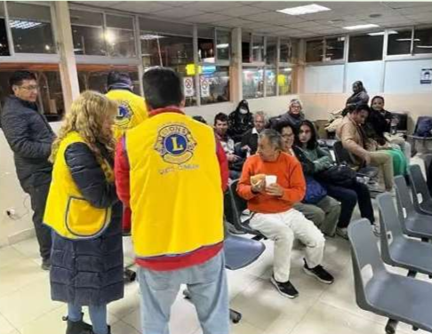
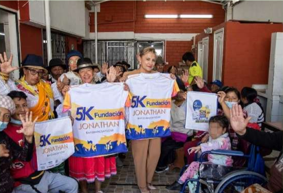

Nuestros Trabajos ONGs





Se dedica a rescatar alimentos que serían descartados, los clasifica y los distribuye a personas vulnerables a través de redes de comedores, comunidades, etc.
- Entrega de alimentos a personas y familias que lo necesitan.
- Apoyo comunitario mediante voluntariado.

Es la organización oficial de la Iglesia Católica en Ecuador encargada de gestionar y organizar la obra social, promoviendo la solidaridad y el desarrollo integral de las comunidades más vulnerables.
-“Un mundo en el que la dignidad de toda persona y la justicia social se respeten plenamente, y donde todas las comunidades puedan vivir con paz, equidad y solidaridad.”
- Apoyo comunitario mediante voluntariado.